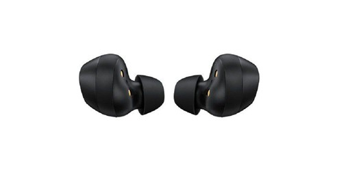
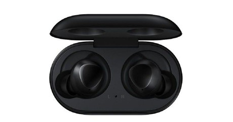
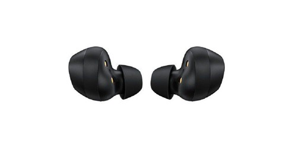
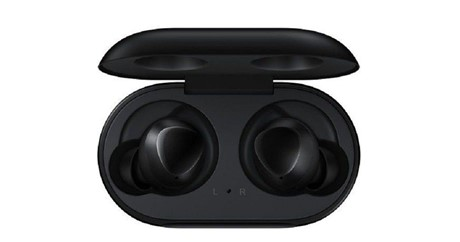
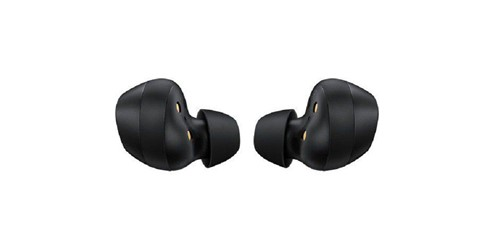
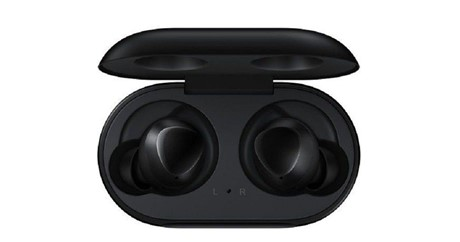
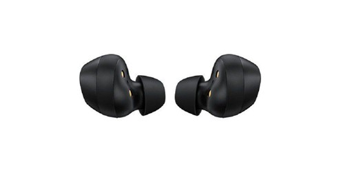
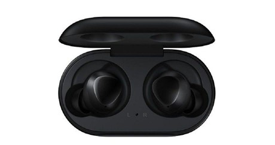

Brand Name |
Serial Number |
Price |
Stock Availability |
|---|---|---|---|
Samsung |
SM-R175NZKAXFA |
R 2 000.00 |
Only 20 items in Stock |
The Samsung Galaxy Buds are true wireless in-ear headphones offering hassle-free, intuitive operation, robust sound reproduction, and IPX2-rated splash resistance for athletes, travelers, office workers, and entrepreneurs. Boasting a compact and cable-free design, a comfortable fit, and drivers tuned by AKG, they keep you plugged into your content without the threat of tangled wires breaking your vibe. Featuring Bluetooth 5.0, the Galaxy Buds support high-quality audio codecs, and mitigate dropouts for uninterrupted enjoyment.